공조냉동기계산업기사 (2003-03-16 기출문제)
1과목: 공기조화
1. 공기 조화용 기계실의 배치 계획시 고려해야 할 사항으로 가장 부적당한 것은?
- 공조 대상실까지 이르는 덕트의 경로
- 외기도입 및 배기덕트의 연결 위치
- 소음 및 진동의 전달 상태
- 채광상태
(정답률: 88%)

2. 다음 공조 방식 중에서 공기-물 방식이 아닌 것은?
- 복사냉난방 방식
- 유인유니트 방식
- 멀티죤유니트 방식
- 휀코일유니트 방식(덕트병용)
(정답률: 52%)
3. 바이패스 팩터(By-pass factor)의 설명 중 옳지 않은 것은?
- 바이패스 팩터는 공기조화기를 공기가 통과할 때 공기의 일부가 변화를 받지않고 원상태로 지나쳐갈 때 이 공기량과 전체 통과공기량에 대한 비율을 나타낸 것이다.
- 공기조화기를 통과하는 풍속이 감소하면 바이패스 팩터는 감소한다.
- 공기조화의 코일열수 및 코일 표면적이 적을 때 바이패스 팩터는 증가한다.
- 공기조화기의 이용 가능한 전열 표면적이 감소하면 바이패스 팩터는 감소한다.
(정답률: 71%)
4. 다음 난방방식 중 자연환기가 많이 일어나도 비교적 난방효율이 좋은 것은?
- 온수난방
- 증기난방
- 온풍난방
- 복사난방
(정답률: 82%)
5. 염화리튬(LiCl)을 사용하는 흡수식 감습장치가 냉각식 감습장치보다 유리할 경우는?
- 공조되어 있는 실내의 현열비가 60% 이하일 때
- 공조기 출구의 노점이 7℃ 이상일 때
- 실내 현열부하의 변동이 클때 실내온도를 변화 시킬때
- 온도가 42℃ 이상 또는 5℃ 이하에서 저습도로 할 때
(정답률: 40%)
6. 250TON(냉각톤) 용량의 냉각탑 보급수량은 어느 정도가 되는가? (단, 1냉각 TON = 3900㎉/h, 냉각수입출구 온도차 = 5℃, 보급수량은 냉각수 순환량의 2%로 한다.)
- 55 ℓ/min
- 65 ℓ/min
- 75 ℓ/min
- 85 ℓ/min
(정답률: 55%)
7. 매시간마다 40Ton의 석탄을 연소시켜서 압력 80㎏/㎝2, 온도 400℃의 증기를 매시간 250Ton 발생시키는 보일러의 효율은? (단, 급수엔탈피 120㎉/㎏, 발생증기 엔탈피 800㎉/㎏, 석탄의 저발열량 5500㎉/㎏이다.)
- 68%
- 77%
- 86%
- 92%
(정답률: 52%)
8. 덕트 설계법에 있어서 설명이 틀린 것은?
- 곡관부는 될 수 있는대로 큰 곡률 반지름 R을 취한다
- 저속 덕트설계는 보통 등압법으로 행해지고 있다.
- 고속 덕트에서는 주덕트의 풍속을 10~15m/s로 취한다
- 덕트의 곡부, 분지관 등에서는 와류의 에너지 소비에 따르는 압력손실과 마찰에 의한 압력손실이 생기는데 이 양자를 합한 것을 국부저항 이라고 한다.
(정답률: 62%)
9. 다음 중에서 분무형 에어와셔가 아닌 것은?
- 횡형 저속식
- 유닛형 고속식
- 횡형 고속식
- 역류형
(정답률: 68%)
10. 온수 난방에서 방열기의 상당방열 면적을 구하는 식
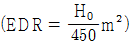
에서 H0는 무엇을 가리키는가?- 온수 온도
- 증발량
- 방열량
- 응축수량
(정답률: 69%)
11. 다음 중 에너지손실이 가장 큰 공조방식은?
- 2중 덕트방식
- 각층 유니트방식
- 휀코일 유니트방식
- 유인 유니트방식
(정답률: 75%)
12. 덕트의 설계법에 속하지 않는 것은?
- 정압법
- 등속법
- 정압 재취득법
- 등중량법
(정답률: 65%)
13. 다음 각층 유닛 방식의 설명 중 옳지 못한 것은?
- 층별 존 제어가 가능하다.
- 보수관리가 용이하다.
- 공조기 수가 많으므로 설비비가 많이 요구된다.
- 방송국, 신문사, 백화점 등의 대형건물에 사용된다.
(정답률: 57%)
14. 냉수코일의 설계에 있어서 코일 출구온도 10℃, 코일 입구온도 5℃, 전열부하가 20000kcal/h 일 때,코일내 순환수량(ℓ/min)은 얼마인가?
- 55.55 ℓ/min
- 66.66 ℓ/min
- 78 ℓ/min
- 98.76 ℓ/min
(정답률: 56%)
15. 다음의 노점온도에 관한 설명 중 틀린 것은?
- 공기중의 수증기가 응축하기 시작하는 온도를 노점온도라 한다.
- 노점온도는 절대습도에 의해 정해지며 포화공기중의 절대습도가 클수록 낮아진다.
- 수증기량이 절대습도보다 크면 절대습도 이상의 수증기는 물방울로 된다.
- 포화공기의 온도를 습공기의 노점온도라 한다.
(정답률: 48%)
16. 현열비(SHF)에 대한 설명 중 틀린 것은? (단, qS는 현열량, qL은 잠열량, ΔT는 온도 변화량, Δx는 절대습도 변화량이다.)
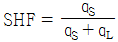
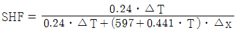
- 설계 조건과 더불어 SHF가 계산되면 실내로 공급되는 공기의 상태를 알 수 있다.
- SHF 계산식에서 절대습도 변화량과 습구온도 변화량 관계를 알 수 있다.
(정답률: 41%)
17. 다음은 여러 가지 난방방식에 관한 문제이다. 바르게 설명된 것은?
- 증기난방은 복사 열전달이 주로 이용된다.
- 온수난방은 간접난방이다.
- 직접난방은 대류난방의 한가지 형식이다.
- 복사난방은 쾌감도가 가장 좋다.
(정답률: 82%)
18. 다음 중에서 대류난방과 비교하여 복사난방의 특징이라고 할 수 없는 것은?
- 실의 높이에 따른 온도편차가 크지않다.
- 환기시에는 열손실이 크다.
- 하자가 발생하였을 때 위치확인이 곤란하다.
- 열용량이 크므로 즉각적인 대응이 어렵다.
(정답률: 59%)
19. 다음은 냉각코일에 관한 설명이다. 맞지 않는 것은?
- 휜(fin)이 수평으로 설치되면 표면에 있는 수막이 흐르기 힘들고 열전달 효율이 낮아지므로 수직으로 설치한다.
- 코일내의 유속은 0.3∼0.4m/s일 때가 효율이 좋고, 공기와 냉수의 입구 및 출구방향이 동일하게 위치되도록 설치한다.
- 입구수온은 6℃전후가 적당하며, 출구와의 온도차는 5∼10℃ 정도가 좋다.
- 코일의 정면풍속은 2∼3m/s 정도가 좋으며, 3m/s 이상에서는 코일 직후에 엘리미네이터(eliminator)를 설치한다.
(정답률: 58%)
20. 급수온도 10℃이고, 증기압력 14kg/cm2, 온도 240℃인 과열증기(엔탈피 693.8kcal/kg)를 1시간에 10000kg 발생시키는 증기보일러가 있다. 이 보일러의 상당증발량은 얼마인가?
- 10479 kg/h
- 11580 kg/h
- 12691 kg/h
- 13702 kg/h
(정답률: 56%)
2과목: 냉동공학
21. 냉각탑에서의 손실수의 구분에 해당되지 않는 것은?
- 냉각할 때 소비한 증발수량
- 냉각수 상ㆍ하부의 온도차
- 탱크내의 불순물의 농도를 증가시키지 않기 위한 보급수량
- 냉각공기와 함께 외부로 비산되는 소비수량
(정답률: 52%)
22. 불응축 가스의 발생 원인 중 틀린 것은?
- 냉매 보충시
- 윤활유 보충시
- 응축 능력의 감소가 일어날 때
- 진공 운전시 저압부의 누설에 의해
(정답률: 35%)
23. 냉동기의 구조중 응축기가 하는 기능은 어느 것인가?
- 냉매를 보내는 심장부이다.
- 냉장고내의 열을 뺏는다.
- 냉장고 밖으로 열을 방출한다.
- 냉매액을 저장한다.
(정답률: 65%)
24. 다음은 -15℃대형 냉장고용 증발기의 제상(defrost)에 관한 설명이다. 옳은 것은 어느 것인가?
- 제상방식에는 hot gas, 전열기, 온수 Spray, 감압방식 등에 의한 것이 있다.
- hot gas 제상은 유용한 방식이지만, 증발기 1 대로서는 사용할 수가 없다.
- 제상은 가열에 의한 방식이 일반적이기 때문에 defrost에 의해 생기는 물은 배수관에서 빙결될 우려는 없다.
- 유니트쿨라(Unit cooler)의 경우 defrost시 일반적으로 송풍기를 정지시킨다.
(정답률: 35%)
25. 압축기 실린더 직경110㎜, 행정80㎜, 회전수900rpm, 기통수가 8기통인 암모니아 냉동장치의 냉동능력은 얼마인가? (단, 냉동능력은 R = V/C 로 산출하며, 여기서 R은 냉동능력 (RT), V는 피스톤 토출량(m3/h), C는 정수로서 8.4이다.)
- 30.8RT
- 35.4RT
- 39.1RT
- 48.2RT
(정답률: 47%)
26. 다음은 압축기의 체적효율(ηc)을 설명한 것이다. 이론상 맞지 않는 것은?
- 압축기의 압축비가 클수록 ηc는 커진다.
- 틈새가 작을수록 ηc는 커진다.
- 실린더 체적이 큰 압축기 일수록 ηc는 커진다.
- 회전수가 작을수록 ηc는 커진다.
(정답률: 53%)
27. 액체나 기체가 갖는 모든 에너지를 열량의 단위로 나타낸 것을 무엇이라고 하는가?
- 전열량
- 외부에너지
- 엔트로피
- 내부에너지
(정답률: 44%)
28. 그림과 같이 운전되고 있는 어떤 냉동장치가 있다. 이때 압축기의 피스톤 압출량이 146.5m3/h이라고 한다면 냉동능력은 얼마인가? (단, 체적효율은 85%로 한다.)
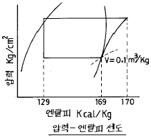
- 10RT
- 15RT
- 20RT
- 25RT
(정답률: 54%)
29. 냉동실의 온도를 -10℃로 유지하기 위하여 매시 100000㎉의 열량을 제거해야 한다. 이 배제열량을 냉동기로 제거한다면 이 냉동기의 소요 마력은 얼마가 되는가? (단, 이 냉동기의 방열온도는 15℃이다.)
- 17.51HP
- 16.01HP
- 14.83HP
- 13.01HP
(정답률: 38%)
30. 정압식 팽창 밸브는 다음의 어느 것에 의하여 제어 작용을 하는가?
- 증발기의 온도
- 증발기의 코일 과열도
- 냉방의 응축속도
- 증발기의 압력
(정답률: 75%)
31. 냉매액의 압력이 감소하면 증발온도는?
- 강하한다.
- 상승한다.
- 변화하지 않는다.
- 일정치 않다.
(정답률: 52%)
32. 물질의 변화중 고체가 액체 상태를 거치지 않고 바로 기체로 되는 현상을 무엇이라고 하는가?
- 응고
- 응축
- 승화
- 융해
(정답률: 73%)
33. 다음의 2원 냉동 사이클 설명 중 옳은 것은?
- 일반적으로 고온측에는 R13, R22, 프로판 등을 냉매로 사용한다.
- 저온측에 사용하는 냉매는 R13, R22, 에탄, 에칠렌 등이다.
- 팽창탱크는 저압측에 설치하는 안전장치이다.
- 고온측과 저온측에 사용하는 윤활유는 같다.
(정답률: 47%)
34. 다음 단열압축에 대한 설명 중 옳지 못한 것은?
- 공급되는 열량은 0 이다.
- 공급된 일은 기체의 엔탈피 증가로 보존된다.
- 단열 압축전 보다 온도, 비체적이 증가한다.
- 단열 압축전 보다 압력이 증가한다.
(정답률: 54%)
35. 사이클의 열효율을 높이는데 유효한 방법은?
- 급열온도를 높게한다.
- 동작물질의 양을 증가한다.
- 밀도가 큰 동작물질을 사용한다.
- 방출열 온도를 높게 한다.
(정답률: 35%)
36. 다음 중 냉동기유로서의 구비조건이 아닌 것은?
- 저온에서 응고하지 않을 것
- 열에 대한 안전성이 높을 것
- 냉매와 화학반응을 일으키지 않을 것
- 전기절연 저항이 낮을 것
(정답률: 76%)
37. 이상 기체를 정압하에서 가열하면 체적과 온도의 변화는 어떻게 되는가?
- 체적증가, 온도상승
- 체적일정, 온도일정
- 체적증가, 온도일정
- 체적일정, 온도상승
(정답률: 73%)
38. 압축 냉동기에서 증발온도 -15℃, 응축온도 30℃인데 응축 온도는 변화시키지 않고 증발온도를 -30℃로 강하시키면 그 성적계수는 어떻게 변화하는가?
- 처음의 2/5 정도가 된다.
- 처음의 1/2 정도가 된다.
- 처음의 7/10 정도가 된다.
- 처음의 9/10 정도가 된다.
(정답률: 40%)
39. 다음 P-h선도는 2단압축 1단 팽창 냉동장치의 경우이다. 이론상 아래 사이클로서 운전될 때 이 압축기의 저단측 냉매순환량에 의한 고단측 냉매순환량의 비를 구하면 얼마인가?
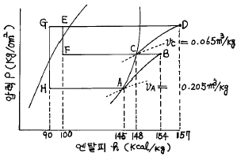
- 1.63
- 1.45
- 1.33
- 1.15
(정답률: 30%)
40. 다음 중 실제기체가 이상기체의 상태식을 근사적으로 만족하는 경우가 아닌 것은?
- 분자량이 작을수록
- 압력이 높을수록
- 온도가 높을수록
- 비체적이 클수록
(정답률: 44%)
3과목: 배관일반
41. 가스배관의 경로 선정에 대해서 설명한 것이다. 이 중 틀린 것은?
- 최단거리로 할 것
- 구부러지거나 오르내림을 적게할 것
- 가능한 은폐하거나 매설할 것
- 가능한 한 옥외에 할 것
(정답률: 67%)
42. 냉매 배관용으로 사용하는 강관은?
- 수도용 아연 강관
- 압력 배관용 탄소강 강관
- 알루미늄관
- 고온 배관용 탄소강 강관
(정답률: 52%)
43. 다음의 배관 도시기호 중 앵글 밸브를 나타낸 것은?
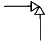
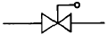
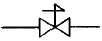
(정답률: 64%)
44. 동관접합 방법의 종류가 아닌 것은?
- 빅토릭 접합
- 플레어 접합
- 용접 접합
- 납땜 접합
(정답률: 72%)
45. 냉각탑에 관한 다음 기술 중 부적합한 것은?
- 보급수량은 냉각수 순환수량의 1∼3%를 고려한다.
- 냉각탑은 통풍이 잘되는 곳에 설치한다.
- 냉각수 입출구 수온의 차를 레인지라 한다.
- 냉각수는 외기의 건구온도 이하로 냉각 시킬 수 없다
(정답률: 54%)
46. 급탕주관의 길이가 40m, 반탕주관의 길이가 30m이다. 배관 부속저항은 무시하고, 반탕주관의 전체 길이와 급탕주관 길이의 50%만 양정에 고려할 때 순환 펌프의 양정은 약 몇 m인가?
- 1.5m
- 1.2m
- 0.9m
- 0.5m
(정답률: 37%)
47. 다음 사항 중 옳지 않은 것은?
- 단일 덕트 방식은 공기식이다.
- 유인 유닛방식은 공기, 수식이다.
- 팬코일 유닛방식은 공기식이다.
- 분리형 공기조화기는 냉매방식이다.
(정답률: 50%)
48. 유속이 1m/sec일때 수격작용(water hammer)이 일어난다면 압력은 몇 ㎏/㎝2이 되는가?
- 2
- 5
- 14
- 25
(정답률: 25%)
49. 신축이음 중 가장 큰 공간을 차지하는 것은?
- 슬리브형
- 루프형
- 벨로우즈형
- 스위블형
(정답률: 68%)
50. 다음은 급수관의 관지름을 결정할 때 유의하여야 할 사항이다. 유의할 사항으로 설명이 옳지 않은 것은?
- 관 길이가 길면 마찰손실도 커진다.
- 마찰손실은 유량과 유속에 관계가 있다.
- 가는 관을 여러개 쓰는 것이 굵은 관을 쓰는 것 보다 마찰손실이 적다.
- 마찰손실은 고저차가 크면 클수록 손실도 커진다.
(정답률: 67%)
51. 증발기가 응축기보다 아래에 있는 액관의 경우에는 2m 이상의 역루프 배관을 해준다. 그 이유는?
- 압축기 가동ㆍ정지시 냉매액이 증발기로 흘러내리는 것을 방지하기 위해서이다.
- 압력강하를 크게 줄이기 위해서이다.
- 신축을 감소시키기 위해서이다.
- 전자밸브 설치위치를 정확히 하기 위해서이다.
(정답률: 54%)
52. 다음 중 배관의 이음쇠에 있어서 플렌지형은?
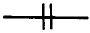
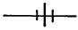
(정답률: 72%)
53. 다음에서 보온을 하지 않아도 되는 배관은?
- 통기관
- 증기관
- 온수관
- 응축수관
(정답률: 67%)
54. 온수난방의 보온재로서 부적당한 것은? (단, 관내 흐르는 온수의 온도는 80℃이다.)
- 유리 섬유
- 폼 폴리에틸렌
- 우모 펠트
- 염기성 탄화 마그네슘
(정답률: 43%)
55. SPPS38-E-50A × SCH40-SESCO의 배관 표기중 -E- 는 무엇을 뜻한 것인가?
- 제조법
- 제조자명
- 관의 종류
- 관의 재질
(정답률: 43%)
56. 냉동장치의 토출배관 시공시 주의사항으로 적당하지 못한 것은?
- 관의 합류는 T이음보다 Y이음으로 한다
- 압축기 정지 중에도 관내에 응축된 냉매가 압축기로 역류하지 않도록 한다
- 압축기에서 입상된 토출관의 수평 부분은 응축기쪽으로 상향 구배를 한다
- 헤드의 굵기는 가스가 충돌하지 않는 굵기로 한다
(정답률: 67%)
57. 급탕배관 설계시 배관 관경 결정을 위한 유속은 어느 범위 이내에 하는 것이 바람직한가?
- 0.5 m/s
- 1.5 m/s
- 3 m/s
- 4 m/s
(정답률: 65%)
58. 다음에 그려진 온수난방 방식을 귀환관의 배관방법에 따라 분류하면 어떤 방식인가?
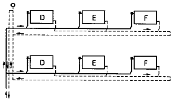
- 직접 귀환방식
- 역 귀환방식
- 간접 귀환방식
- 진공 귀환방식
(정답률: 66%)
59. 배관지지 철물이 갖추어야할 조건으로 가장 적당하지 않은 것은?
- 충격과 진동에 견딜 수 있는 재료일 것
- 배관시공에 있어서 구배조정이 용이할 것
- 보온 및 방로를 위한 재료일 것
- 온도변화에 따른 관의 팽창과 신축을 흡수할 수 있을 것
(정답률: 70%)
60. 경질 염화비닐관의 특성으로 옳지 않은 것은?
- 급탕관, 증기관으로 사용하는 것은 적합하지 않다.
- 다른 배관에 비해 관내 마찰손실이 커서 불리하다.
- 온도의 상승에 따라 인장강도는 떨어진다.
- 열팽창율이 커서 철의 7∼8배가 된다.
(정답률: 64%)
4과목: 전기제어공학
61. 자동제어의 추치제어 3종이 아닌 것은?(오류 신고가 접수된 문제입니다. 반드시 정답과 해설을 확인하시기 바랍니다.)
- 비율제어
- 추종제어
- 프로세스제어
- 프로그램제어
(정답률: 36%)
62. 그림과 같은 피드백회로의 종합 전달함수 C/R는?
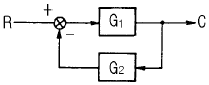
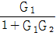
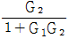
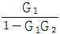
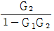
(정답률: 59%)
63. 제어계의 입력과 출력이 서로 독립적인 제어계에 해당되는 것은?
- 피드백제어계
- 자동제어제어계
- 개루프제어계
- 폐루프제어계
(정답률: 45%)
64. 출력이 입력에 전혀 영향을 주지 못하는 제어는?
- 프로그램제어
- 피드백제어
- 시퀀스제어
- 폐회로제어
(정답률: 55%)
65. 그림과 같은 브리지회로에서 검류계 G에 전류가 흐르지 않는다면 저항 r5 의 값은 몇 Ω 인가? (단, 단위는 모두 Ω이다.)
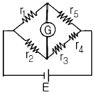
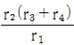
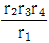
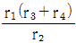
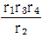
(정답률: 52%)
66. 출력 1kW, 효율 80%인 유도전동기의 손실은 몇 W 인가?
- 100
- 250
- 400
- 800
(정답률: 43%)
67. 100V의 기전력으로 100Ｊ의 일을 할 때 전기량은 몇 C 인가?
- 0.1
- 1
- 10
- 100
(정답률: 69%)
68. 맥동주파수가 가장 많고 맥동률이 가장 적은 정류방식은?
- 단상반파정류
- 단상전파정류
- 3상반파정류
- 3상전파정류
(정답률: 70%)
69.
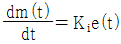
는 어떤 조절기의 출력(조작신호) m(t)와 동작신호 e(t)사이의 관계를 나타낸 것이다. 이 조절기의 제어동작은? (단, Ki는 상수이다.)- P-Ｉ동작
- P-D동작
- D동작
- Ｉ동작
(정답률: 37%)
70. 실리콘 제어 정류기의 전압대 전류의 특성과 비슷한 소자는?
- 다이러트론
- 클라이스트론
- 마그네트론
- 다이너트론
(정답률: 33%)
71. 평형 3상 Y결선에서 상전압 ES와 선간전압 EL과의 관계는?
- EL=ES
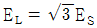
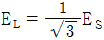
- EL=3ES
(정답률: 50%)
72. 직접 디지털제어(Direct Digital Control)의 특징이 아닌것은?
- 제어내용은 프로그램으로 실현된다.
- 제어 알고리즘이 고정되어 있다.
- 컴퓨터의 출력을 조작부에 직접 연결할 수 있다.
- 종래의 제어기에서 실현하기 어려운 제어내용을 쉽게 실현할 수 있다.
(정답률: 48%)
73. 피드백 제어와 관계가 깊은 것은?
- 방안의 난방 온도조절기를 18℃로 조절하였다.
- 승강기에 탑승하여 10층으로 이동하였다.
- 세탁기에 세탁물을 넣고 1시간 동안 작동시켰다.
- 자동 판매기에 동전을 넣고 물건을 구입하였다.
(정답률: 53%)
74. PLC(Programmable Logic Controller)를 사용한 제어에서 CPU의 구성에 해당하지 않는 것은?
- 연산장치
- 프로그램 카운터
- 기억장치
- 범용 레지스터
(정답률: 38%)
75. T1＞T2＞0일 때,
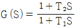
의 벡터궤적은?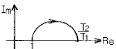
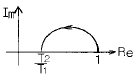
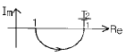
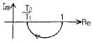
(정답률: 61%)
76. 비례적분(PI)제어동작의 특징에 해당하는 것은?
- 간헐현상이 있다.
- 잔류편차가 생긴다.
- 응답의 안정성이 작다.
- 응답의 진동시간이 길다.
(정답률: 30%)
77. 저항의 종류 중 가능한 큰 것이 좋은 것은?
- 접지저항
- 도체저항
- 절연저항
- 접촉저항
(정답률: 53%)
78. 저항 10Ω과 정전용량 20μF를 직렬로 연결하였을 때, 이 회로의 시정수는 몇 ms 인가?
- 0.2
- 0.8
- 1.2
- 1.6
(정답률: 47%)
79. 교류회로의 전력 P=VIcosθ에서 cosθ를 무엇이라 하는가?
- 무효율
- 피상율
- 유효율
- 역률
(정답률: 50%)
80. AC 서보전동기의 전달함수는 어떻게 취급하면 되는가?
- 미분요소와 1차 요소의 직렬결합으로 취급한다.
- 적분요소와 2차 요소의 직렬결합으로 취급한다.
- 미분요소와 2차 요소의 병렬결합으로 취급한다.
- 적분요소와 1차 요소의 병렬결합으로 취급한다.
(정답률: 44%)